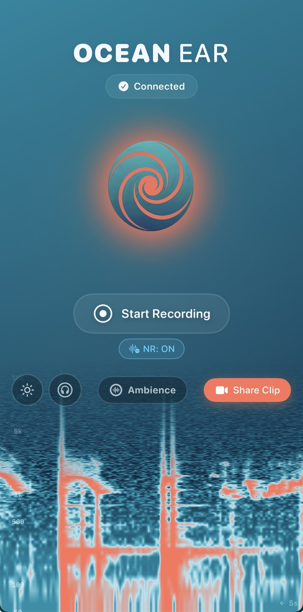
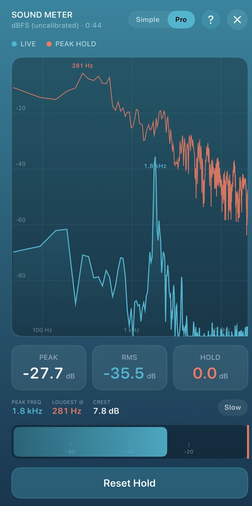
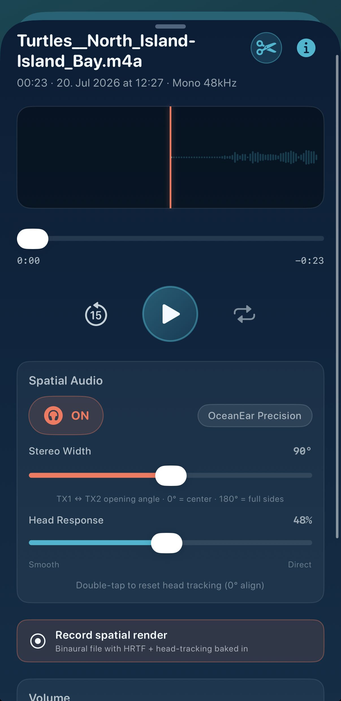
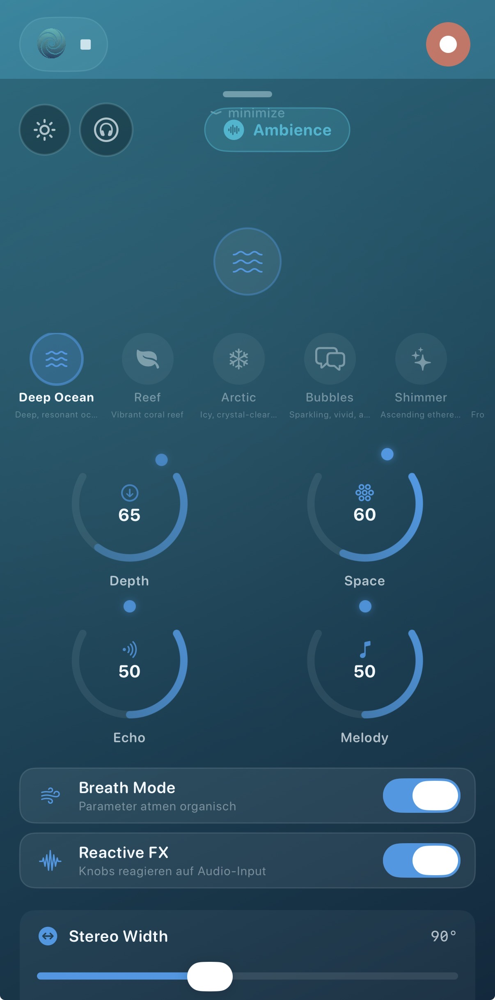
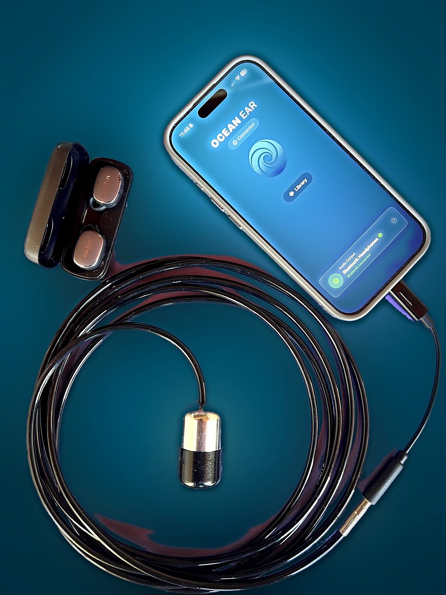

Hear what you normally can't.
Immersive 3D audio, above and below the surface. Captured on your phone, no rig and no expertise needed.
Free for seven days with every feature, then $19.99 once. No subscription. iPhone 12 or later, iOS 17.6.
Real-time.
Real direction.
Live hydrophone audio, binaural-rendered in real time. Head-tracked, so the source stays put when you move. Peak, RMS and crest on screen while you listen.


Record it. Export it.
Drop it in your DAW.
Raw stereo or binaural render. WAV or AAC. GPS, timestamp and notes baked into every file. No conversion, no plugins, no laptop on the boat.

Or just listen.
Pair any Bluetooth speaker and the whole boat hears it, not just whoever is wearing the headphones. Drop the hydrophone over the side at anchor and the reef comes through the cockpit.
Ambience mode does the same thing at home: the live hydrophone as a generative soundscape, through a speaker in the studio or the bach.

Connect it. Share it.
Find it again.
The rest of the app, in four screens. Everything local, everything private.
Plug in. It knows.
Hydrophone on USB-C, earbuds or any Bluetooth speaker for output — a boat stereo included. The app confirms both before you hit record, so you find out on the wharf and not in the edit.
Built for the field.
No conversion, no plugins, no laptop. Just plug in.
| Phone | iPhone 12 or later · iOS 17.6+ |
| Connection | USB-C, class compliant |
| Recording | WAV or AAC (M4A container) |
| Sample rate | 48 kHz |
| Channels | 2-channel stereo |
| Spatial | Binaural render with head-tracking |
| Metadata | GPS, timestamp, notes per file |
| Metering | Peak, RMS, crest · dBFS, uncalibrated |
| Share | 15s story or binaural video |
| Library | Search, favourites, storage overview · iCloud backup |
| Hydrophone | Aquarian Audio H2d · full spec |
Sensitivity, depth rating and dimensions are on the hydrophone page. Anything else: hello@oceanear.co.nz
Want to hear it
for yourself?
In stock and ready to ship from Wellington. Every kit comes with a code that unlocks the full app.

$595 with 3 m of cable · $635 with 6 m · $645 with 9 m
Shipping is $20 within New Zealand and Australia. Pickup in Wellington is free. Anywhere else, ask and we’ll quote it.
Paying in Bitcoin? 10% off the total. Pick it in the form and you get a BTC invoice instead of a card link.
Includes an Aquarian Audio H2d hydrophone · USB-C interface · redeem code for the full OceanEar App. Longer cable than 9 m on request.
Needs an iPhone 12 or later on iOS 17.6. The kit does not work with Android.
12-month warranty · 14-day returns · sale terms
Don't want to wait? The app is free on the App Store: seven days with every feature unlocked, then $19.99 once. No subscription, no auto-renewal.

Order received.
Your payment link is on its way. The kit ships from Wellington as soon as it's paid, with the code for the full app.
In stock · Ships from Wellington · Pickup available